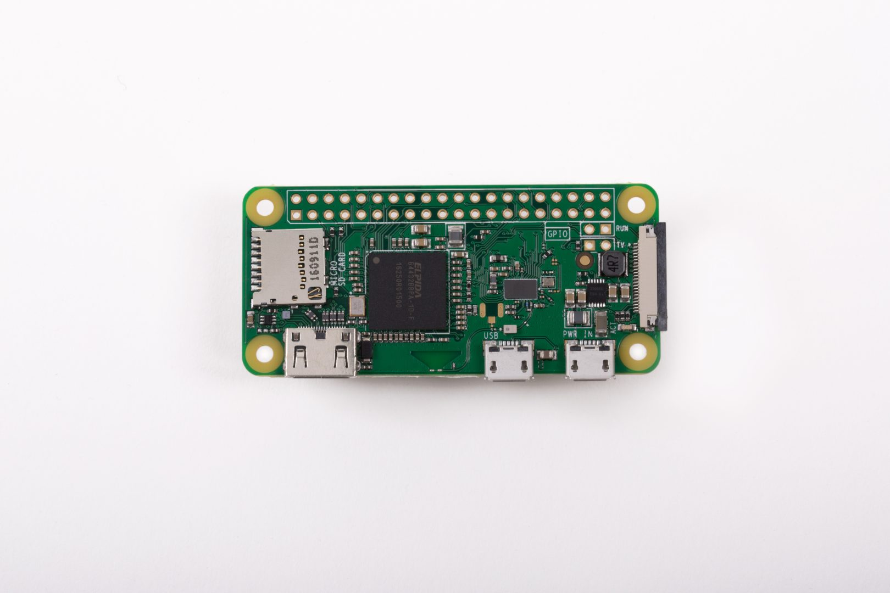

layout: true class: theme-whiskey, slides-left --- name: cover # JavaScript RoadTrip Michael Jaser<br> Peerigon GmbH<br> [@mmeaku](https://twitter.com/mmeaku) <img id="slide-cover-img" src="./assets/peerigon-logo.png" width="400"> --- layout: true class: theme-whiskey, slides-centered --- class: slides-chapter ## ☎️ The call --- >"We need an infotainment for the car we're building. It's not too complicated, just a few controls..." Max, Sono Motors --- ## First draft <img src="./assets/first-app-draft.png" style="width: 70vh"/> --- >"That looks alright. If the car provides the required interfaces and the runtime (a Browser), we can build it." Me --- class: slides-chapter ## Wait! Sono Motors? --- ## Sono Motors <img src="./assets/sono-team.jpg" /> - aims to build an effordable solar powered electric car - founded in 2016 - based in Munich --- <img src="./assets/sion.jpg" /> --- ## Sion >We developed the Sion, a electric car with a range of 250 km and a price of 16.000 €. Its integrated solar cells generate further energy to cover up to 30 km per day. Our vision is simple: Providing a mobility concept for a future without mineral oil and emissions. <small>https://www.sonomotors.com/about.html#st-timeline</small> --- class: slides-chapter ## 🚀 Let's build it! --- ## 💡 First idea: Mirroring - connect Android phone with Dashboard - open Sono App on phone - controllable both ways - Android provides Maps / Music / etc. --- ## Sounds easy, but... - it's only an upscaled version - poor usability / pixelated - not designed to be controlled while driving --- ## 📐 Back to the drawing board... --- class: slides-chapter ## Betting on the web --- ## 💡 Responsive PWA - works on Dashboard (10") and Smartphones (Android, iOS) - two "modes" - same functionality - a single codebase - synchronized on application level --- ## Downside - by ditching Android, the app grew more complex - Music and Navigation as part of the app, not the OS --- ## Planned Features - controls breSono (LEDs) - provides navigation (GPS) - constrols the car (CAN) - open/close battery lid - lock/unlock car - computes cockpit information (CAN) - hosts a Hotspot (Wifi) - shares mobile data connection (LTE) --- class: slides-chapter ## UX Development / Design --- Jannik --- class: slides-chapter ## Architecture --- class: slides-chapter ## Hardware --- ## Sonobox  <small>https://www.raspberrypi.org/products/raspberry-pi-zero-w/</small> --- ## CAN <img src="./assets/can.gif" style="width: 40vw"/> --- ## Demo <video src="./assets/BiSono.mp4" controls="controls" style="height: 50vh"/> --- class: slides-chapter ## ⚡ Challenges --- ## Thank you